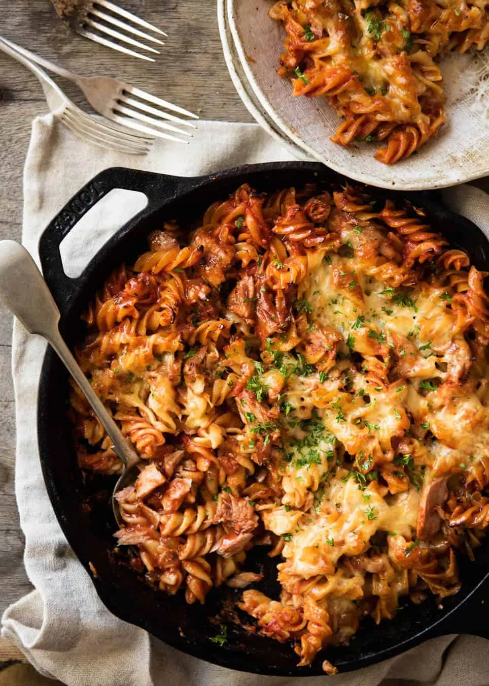

Tuna and Broccoli pasta bake

Ingredients
- 400g tin of Tuna
- 500g dry pasta (spirals work well)
- Milk
- Shredded cheese
- Head of broccoli - chopped into florets
Method
Pre-heat oven to 180 degrees
Boil a large pot of water and cook pasta
etc etc
Back to Home